CODING AGENTS AS PIXEL WORLD MODELS
traex/GPT-6-Astra · common50_0017
点击播放 · 原生 RGB 像素
逐轮保存的候选
回放视频、检查图与代码变化。
每份候选均可单独播放。实际图片检查记录在下方工具轨迹中。
候选 01播放与检查图
点击播放 · 原生 RGB 像素
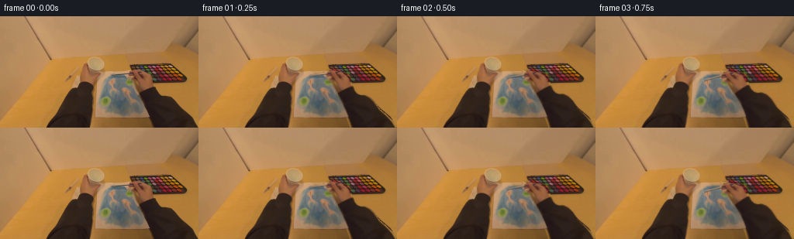
展开代码变化
--- 上一保存版本
+++ 本次保存版本
@@ -0,0 +1,154 @@
+from pathlib import Path
+import numpy as np
+from PIL import Image, ImageDraw, ImageFilter
+import cv2
+from artifact_io import save
+
+ROOT=Path(__file__).resolve().parent
+W,H=256,144
+src=np.asarray(Image.open(ROOT/'first_frame.png').convert('RGB'),dtype=np.float32)
+yy,xx=np.mgrid[:H,:W].astype(np.float32)
+
+def polygon(points, blur=0):
+ scale=4
+ im=Image.new('L',(W*scale,H*scale))
+ ImageDraw.Draw(im).polygon([(round(x*scale),round(y*scale)) for x,y in points],fill=255)
+ if blur: im=im.filter(ImageFilter.GaussianBlur(blur*scale))
+ return np.asarray(im.resize((W,H),Image.Resampling.LANCZOS),np.float32)/255
+
+outline=[(165.9,70.9),(169.4,69.2),(173.8,69.0),(177.6,70.0),
+ (180.5,70.8),(184.8,72.6),(189.5,75.5),(193.4,79.5),(195.7,85.1),
+ (196.7,90.8),(199.2,90.5),(201.4,97.4),(204.5,101.0),
+ (208,102.6),(214.3,103.3),(220,106.5),(225.5,112.0),(229.8,117.9),
+ (233.0,122.2),(239,127.1),(244.3,131.7),(248.9,136.8),(255.5,147),
+ (198.3,147),(195.4,138.0),(192.1,129.0),(188.9,121.9),(185.3,113.3),
+ (181.5,104.7),(178.6,98.9),(177.5,95.6),(175.0,91.4),(172.7,86.1),
+ (171.0,82.6),(168.4,82.2),(166.2,81.5),(165.6,79.5),(167.0,78.0),
+ (167.6,77.2),(164.5,77.4),(164.3,75.6),(165.1,73.9),(165.0,72.2)]
+arm=polygon(outline,.37)
+brush=polygon([(141.8,75.0),(146.4,74.3),(166.8,72.5),(170.1,72.0),
+ (170.3,73.8),(148.0,76.1),(143.5,77.0),(141.5,76.4)],.20)
+alpha=np.maximum(arm,brush)
+# Construct only the surface hidden behind the moving right hand. All visible
+# stationary objects are sampled directly from the supplied image.
+remove=cv2.dilate((arm>.04).astype(np.uint8),np.ones((3,3),np.uint8))
+# Locally sampled wood surface and broad body-cast illumination.
+texture=cv2.remap(src, np.clip(xx+62,218,253).astype(np.float32),
+ np.clip(yy-20,86,124).astype(np.float32),cv2.INTER_LINEAR)
+table=texture.copy()
+shade=1-0.29*np.exp(-((xx-170)/61)**2)*np.clip((yy-115)/29,0,1)
+table*=shade[...,None]
+background=table.copy()
+# Perspective continuation of the sheet underneath the wrist.
+paper=polygon([(125.6,71.8),(169.1,70.5),(199.0,131.3),(123.0,130.5)],.32)
+# Extrapolate the nearby sheet pigment, never unrelated object pixels.
+paperfill=np.zeros_like(src)
+for y in range(H):
+ occupied=np.where(arm[y]>.10)[0]
+ left=int(occupied[0]) if len(occupied) else 199
+ # The hand starts at the right side of the painting.
+ left=max(163,min(left,199))
+ samplex=max(124,left-4)
+ rowcolor=src[y,samplex:samplex+2].mean(0)
+ paperfill[y,:,:]=rowcolor
+ # Narrow cream margin at the projected right side.
+ right=169.1+(y-70.5)*(29.9/60.8)
+ border=np.clip((xx[y]-(right-3.4))/2.5,0,1)
+ cream=np.array([178,142,108],np.float32)*(1-0.05*np.clip((y-80)/50,0,1))
+ paperfill[y]=paperfill[y]*(1-border[:,None])+cream*border[:,None]
+background=background*(1-paper[...,None])+paperfill*paper[...,None]
+# The palette consists of a repeating, perspective-compressed grid. Copy
+# intact wells across the occluded part, retaining photographic texture.
+pal=polygon([(167.0,62.4),(220.7,60.7),(239.7,78.2),(241.0,81.5),
+ (238.7,84.9),(179.2,85.4)],.28)
+palsrc=cv2.remap(src,np.minimum(xx+26,240).astype(np.float32),
+ (yy-.23).astype(np.float32),cv2.INTER_LINEAR,
+ borderMode=cv2.BORDER_REFLECT)
+background=background*(1-pal[...,None])+palsrc*pal[...,None]
+# Blend the reconstructed hidden surface at a soft one-pixel boundary.
+rm=cv2.GaussianBlur(remove.astype(np.float32),(0,0),.38)
+plate=src*(1-rm[...,None])+background*rm[...,None]
+# The very slender old brush is filled from the surrounding paper/table.
+bm=(brush>.018).astype(np.uint8)
+bm=cv2.dilate(bm,np.ones((3,3),np.uint8))
+# Only its free section is removed; the handle within the fingers is part of
+# the same photographed moving foreground.
+bm[:,164:]=0
+plate=cv2.inpaint(np.uint8(np.clip(plate,0,255)),bm,3,cv2.INPAINT_TELEA).astype(np.float32)
+Image.fromarray(np.uint8(plate)).save(ROOT/'.tmp'/'background.png')
+Image.fromarray(np.uint8(src*(1-alpha[...,None]*.5)+np.array([255,20,30])*alpha[...,None]*.5)).save(ROOT/'.tmp'/'mask_overlay.png')
+
+pivot=np.array([183.0,96.0],np.float32)
+def weight(y):
+ t=np.clip((y-94)/50,0,1)
+ return 1-t*t*(3-2*t)
+
+def deform(x,y,angle,dx,dy):
+ c,s=np.cos(angle),np.sin(angle)
+ rx=x-pivot[0];ry=y-pivot[1]
+ w=weight(y)
+ return x+w*((c-1)*rx-s*ry+dx),y+w*(s*rx+(c-1)*ry+dy)
+
+def inverse_maps(angle,dx,dy):
+ u=xx.copy();v=yy.copy()
+ # Fixed-point inversion of the smooth, anchored forearm deformation.
+ for _ in range(16):
+ a,b=deform(u,v,angle,dx,dy)
+ u+=xx-a;v+=yy-b
+ return u.astype(np.float32),v.astype(np.float32)
+
+def sample(im,u,v):
+ return cv2.remap(im,u,v,cv2.INTER_LINEAR,borderMode=cv2.BORDER_REPLICATE)
+
+angles=np.array([0,-.045,-.105,-.175,-.255,-.350,-.440,-.402,-.310,-.228,
+ -.255,-.348,-.455,-.422,-.332,-.250,-.290,-.395,-.438,-.370])
+dxs=np.array([0,0,-.15,-.32,-.52,-.70,-.65,-.38,-.05,.22,.18,-.1,-.3,-.12,.28,.64,.64,.39,.40,.72])
+dys=np.array([0,0,.15,.32,.4,.50,.6,.45,.25,.15,.23,.42,.62,.58,.4,.20,.24,.44,.48,.32])
+# Translucent, slightly uneven pigment trails at the actual brush-tip contact.
+S=4
+paint=Image.new('L',(W*S,H*S))
+pigment=np.zeros((H,W),np.float32)
+frames=[]
+prev=np.array([142.7,75.8])
+rng=np.random.default_rng(177)
+noise=cv2.GaussianBlur(rng.normal(0,1,(H,W)).astype(np.float32),(0,0),.52)
+blue=np.stack([49+noise*3.5,102+noise*4,127+noise*4],axis=-1)
+for i,(a,dx,dy) in enumerate(zip(angles,dxs,dys)):
+ tip=np.array(deform(np.array(142.7),np.array(75.8),a,dx,dy))
+ if i==0:
+ frames.append(src.astype(np.uint8));continue
+ if i>=2:
+ stroke=Image.new('L',(W*S,H*S))
+ d=ImageDraw.Draw(stroke)
+ d.line([tuple(prev*S),tuple(tip*S)],fill=255,width=8)
+ r=1.0*S
+ d.ellipse((tip[0]*S-r,tip[1]*S-r,tip[0]*S+r,tip[1]*S+r),fill=235)
+ stroke=stroke.filter(ImageFilter.GaussianBlur(.46*S))
+ dep=np.asarray(stroke.resize((W,H),Image.Resampling.LANCZOS),np.float32)/255
+ # A broad wet wash, with pigment subtly pooling on repeated strokes.
+ pigment=1-(1-pigment)*(1-dep*.18)
+ prev=tip
+ p=np.clip(pigment*(1+noise*.10),0,.53)
+ surface=plate*(1-p[...,None])+blue*p[...,None]
+ u,v=inverse_maps(a,dx,dy)
+ am=np.clip(sample(alpha,u,v),0,1)
+ # Premultiplied pixel warp keeps skin and dark sleeve edge colors intact.
+ prem=sample(src*alpha[...,None],u,v)
+ foreground=prem/np.maximum(am[...,None],1e-5)
+ # Very soft moving contact shadow, confined to newly revealed areas.
+ oldshadow=cv2.GaussianBlur(arm,(0,0),2.0)
+ newshadow=cv2.GaussianBlur(sample(arm,u-1.1,v-1.7),(0,0),2.0)
+ shadow=np.maximum(newshadow-oldshadow*.82,0)*.10
+ surface*=1-shadow[...,None]
+ result=surface*(1-am[...,None])+foreground*am[...,None]
+ # A fraction of a pixel of natural, continuous head motion.
+ cx=.16*np.sin(i*.43)
+ cy=.12*np.sin(i*.31)
+ result=cv2.remap(result,(xx+cx).astype(np.float32),(yy+cy).astype(np.float32),
+ cv2.INTER_LINEAR,borderMode=cv2.BORDER_REFLECT_101)
+ frames.append(np.uint8(np.clip(np.rint(result),0,255)))
+frames=np.stack(frames)
+save(frames,ROOT)
+# Convenient local preview in addition to the required lossless RGB frames.
+Image.fromarray(frames[0]).save(ROOT/'.tmp'/'preview.gif',save_all=True,
+ append_images=[Image.fromarray(f) for f in frames[1:]],duration=250,loop=0)
候选 02播放与检查图
点击播放 · 原生 RGB 像素
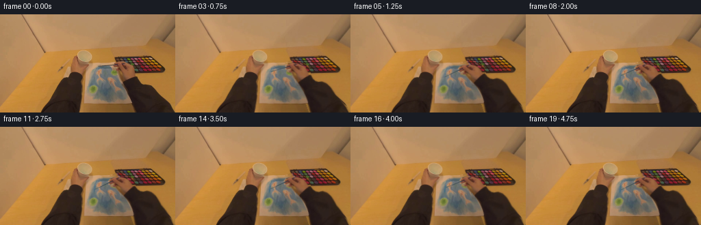
展开代码变化
--- 上一保存版本
+++ 本次保存版本
@@ -28,7 +28,7 @@
arm=polygon(outline,.37)
brush=polygon([(141.8,75.0),(146.4,74.3),(166.8,72.5),(170.1,72.0),
(170.3,73.8),(148.0,76.1),(143.5,77.0),(141.5,76.4)],.20)
-alpha=np.maximum(arm,brush)
+alpha=arm.copy()
# Construct only the surface hidden behind the moving right hand. All visible
# stationary objects are sampled directly from the supplied image.
remove=cv2.dilate((arm>.04).astype(np.uint8),np.ones((3,3),np.uint8))
@@ -73,7 +73,7 @@
bm=cv2.dilate(bm,np.ones((3,3),np.uint8))
# Only its free section is removed; the handle within the fingers is part of
# the same photographed moving foreground.
-bm[:,164:]=0
+bm[:,171:]=0
plate=cv2.inpaint(np.uint8(np.clip(plate,0,255)),bm,3,cv2.INPAINT_TELEA).astype(np.float32)
Image.fromarray(np.uint8(plate)).save(ROOT/'.tmp'/'background.png')
Image.fromarray(np.uint8(src*(1-alpha[...,None]*.5)+np.array([255,20,30])*alpha[...,None]*.5)).save(ROOT/'.tmp'/'mask_overlay.png')
@@ -113,6 +113,28 @@
rng=np.random.default_rng(177)
noise=cv2.GaussianBlur(rng.normal(0,1,(H,W)).astype(np.float32),(0,0),.52)
blue=np.stack([49+noise*3.5,102+noise*4,127+noise*4],axis=-1)
+
+def brush_layer(a,dx,dy):
+ # Subpixel geometry follows the exact photographed grip and keeps the
+ # one-pixel brush shaft crisp as it turns across the textured painting.
+ layer=Image.new('RGBA',(W*S,H*S))
+ draw=ImageDraw.Draw(layer)
+ def point(x,y):
+ px,py=deform(np.array(x),np.array(y),a,dx,dy)
+ return (float(px*S),float(py*S))
+ def line(points,color,width):
+ draw.line([point(x,y) for x,y in points],fill=color,width=width)
+ line([(149.0,75.8),(167.0,73.8)],(51,66,75,255),4)
+ line([(150.0,75.47),(166.6,73.5)],(108,119,121,175),1)
+ line([(147.6,75.96),(152.1,75.46)],(91,96,95,255),4)
+ line([(148.3,75.6),(152.0,75.18)],(139,141,125,190),1)
+ bristle=[(142.5,76.6),(144.2,75.5),(148.1,75.2),(148.5,76.3),
+ (144.8,77.0)]
+ draw.polygon([point(x,y) for x,y in bristle],fill=(104,107,93,245))
+ line([(142.9,76.4),(145.6,76.1)],(69,98,113,230),4)
+ line([(144.8,75.9),(148.0,75.6)],(138,131,105,190),1)
+ return np.asarray(layer.resize((W,H),Image.Resampling.LANCZOS),np.float32)
+
for i,(a,dx,dy) in enumerate(zip(angles,dxs,dys)):
tip=np.array(deform(np.array(142.7),np.array(75.8),a,dx,dy))
if i==0:
@@ -141,6 +163,9 @@
shadow=np.maximum(newshadow-oldshadow*.82,0)*.10
surface*=1-shadow[...,None]
result=surface*(1-am[...,None])+foreground*am[...,None]
+ brush_rgba=brush_layer(a,dx,dy)
+ ba=brush_rgba[...,3:4]/255
+ result=result*(1-ba)+brush_rgba[...,:3]*ba
# A fraction of a pixel of natural, continuous head motion.
cx=.16*np.sin(i*.43)
cy=.12*np.sin(i*.31)
候选 03播放与检查图
点击播放 · 原生 RGB 像素
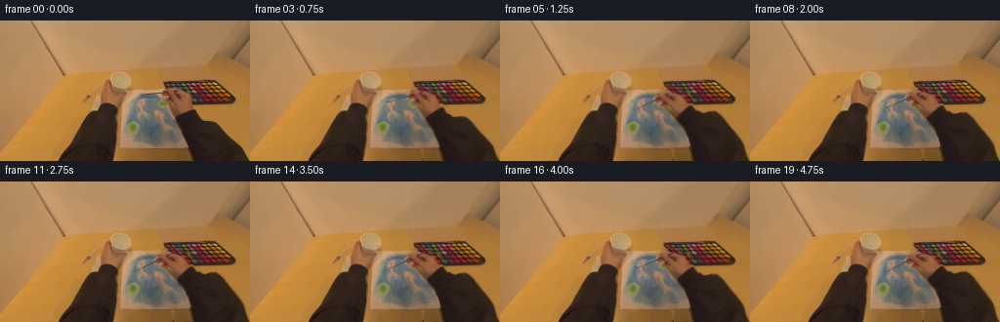
展开代码变化
--- 上一保存版本
+++ 本次保存版本
@@ -26,6 +26,17 @@
(171.0,82.6),(168.4,82.2),(166.2,81.5),(165.6,79.5),(167.0,78.0),
(167.6,77.2),(164.5,77.4),(164.3,75.6),(165.1,73.9),(165.0,72.2)]
arm=polygon(outline,.37)
+# Refine the easily separated dark sleeve from the source colors. This
+# includes its original soft silhouette rather than a polygon approximation.
+brightness=src.mean(2)
+dark=(brightness<80)&(xx>176)&(yy>=92)
+for row in range(99,H):
+ xs=np.flatnonzero(dark[row])
+ if len(xs):
+ lo,hi=int(xs[0]),int(xs[-1])
+ coverage=np.clip((121-brightness[row])/50,0,1)
+ interval=(xx[row]>=lo-1)&(xx[row]<=hi+1)
+ arm[row]=np.where(interval,coverage,0)
brush=polygon([(141.8,75.0),(146.4,74.3),(166.8,72.5),(170.1,72.0),
(170.3,73.8),(148.0,76.1),(143.5,77.0),(141.5,76.4)],.20)
alpha=arm.copy()
候选 04播放与检查图
点击播放 · 原生 RGB 像素
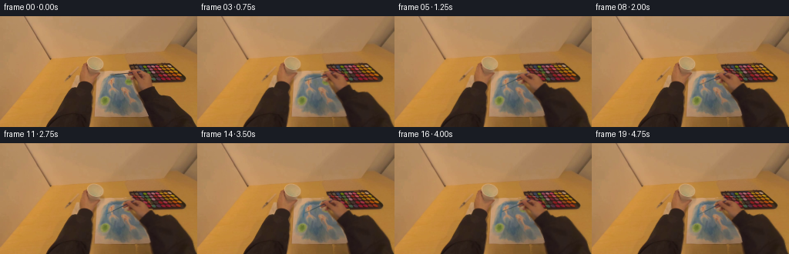
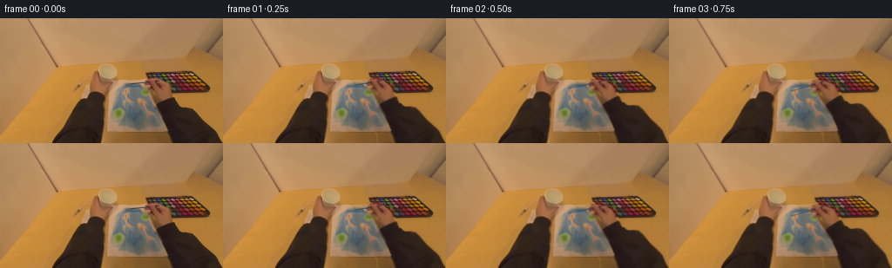
展开代码变化
--- 上一保存版本 +++ 本次保存版本 @@ -44,8 +44,8 @@ # stationary objects are sampled directly from the supplied image. remove=cv2.dilate((arm>.04).astype(np.uint8),np.ones((3,3),np.uint8)) # Locally sampled wood surface and broad body-cast illumination. -texture=cv2.remap(src, np.clip(xx+62,218,253).astype(np.float32), - np.clip(yy-20,86,124).astype(np.float32),cv2.INTER_LINEAR) +texture=cv2.remap(src, np.clip(xx+80,234,253).astype(np.float32), + np.clip(yy-35,86,108).astype(np.float32),cv2.INTER_LINEAR) table=texture.copy() shade=1-0.29*np.exp(-((xx-170)/61)**2)*np.clip((yy-115)/29,0,1) table*=shade[...,None]
可观测工具轨迹
实际执行的命令与返回图片。
命令 1exit 0
/bin/bash -lc 'ls -la; cat prompt.txt; cat GENERATION_RULES.md'
命令 2exit 0
/bin/bash -lc 'cat task_spec.json; cat artifact_io.py'
命令 3exit 0
/bin/bash -lc "python - <<'PY'
from PIL import Image
im=Image.open('first_frame.png'); im.resize((1024,576)).save('.tmp/enlarged.png')
PY"命令 4exit 0
/bin/bash -lc "python - <<'PY'
from PIL import Image,ImageDraw
im=Image.open('first_frame.png').resize((1024,576))
d=ImageDraw.Draw(im)
for x in range(0,256,10):
d.line((x*4,0,x*4,576),fill=(255,255,255,90),width=1);d.text((x*4,0),str(x),fill='red')
for y in range(0,144,10):
d.line((0,y*4,1024,y*4),fill='gray',width=1);d.text((0,y*4),str(y),fill='red')
im.save('.tmp/grid.png')
PY"命令 5exit 0
/bin/bash -lc "python - <<'PY'
from PIL import Image
im=Image.open('first_frame.png');im.crop((136,64,208,111)).resize((864,564)).save('.tmp/hand.png')
PY"命令 6exit 0
/bin/bash -lc "python - <<'PY'
from PIL import Image,ImageDraw
im=Image.open('first_frame.png').resize((1536,864))
d=ImageDraw.Draw(im)
for x in range(135,256,5):
d.line((x*6,60*6,x*6,864),fill=(120,120,120),width=1);d.text((x*6,60*6),str(x),fill='white')
for y in range(65,144,5):
d.line((135*6,y*6,1536,y*6),fill=(120,120,120),width=1);d.text((135*6,y*6),str(y),fill='white')
im.crop((810,350,1536,864)).save('.tmp/coords.png')
PY"命令 7exit 0
/bin/bash -lc "python - <<'PY'
from PIL import Image
im=Image.open('first_frame.png'); im.crop((160,58,244,88)).resize((1008,360)).save('.tmp/palette.png')
PY"命令 8exit 0
/bin/bash -lc "python - <<'PY'
from PIL import Image
im=Image.open('first_frame.png');im.crop((113,68,205,136)).resize((920,680)).save('.tmp/paper.png')
PY"命令 9exit 0
/bin/bash -lc "python - <<'PY' import importlib.util for m in ['numpy','PIL','scipy','cv2']: print(m, bool(importlib.util.find_spec(m))) PY"
命令 10exit 0
/bin/bash -lc "python - <<'PY'
from PIL import Image
im=Image.open('first_frame.png')
for pt in [(250,90),(250,120),(215,92),(227,105),(245,125),(157,138),(185,135),(200,88),(177,87),(175,92),(184,118),(190,128),(170,127),(130,128)]:print(pt,im.getpixel(pt))
PY"命令 11exit 0
/bin/bash -lc "cat > generate.py <<'PY'
from pathlib import Path
import numpy as np
from PIL import Image, ImageDraw, ImageFilter
import cv2
from artifact_io import save
ROOT=Path(__file__).resolve().parent
W,H=256,144
src=np.asarray(Image.open(ROOT/'first_frame.png').convert('RGB'),dtype=np.float32)
yy,xx=np.mgrid[:H,:W].astype(np.float32)
def polygon(points, blur=0):
scale=4
im=Image.new('L',(W*scale,H*scale))
ImageDraw.Draw(im).polygon([(round(x*scale),round(y*scale)) for x,y in points],fill=255)
if blur: im=im.filter(ImageFilter.GaussianBlur(blur*scale))
return np.asarray(im.resize((W,H),Image.Resampling.LANCZOS),np.float32)/255
outline=[(165.9,70.9),(169.4,69.2),(173.8,69.0),(177.6,70.0),
(180.5,70.8),(184.8,72.6),(189.5,75.5),(193.4,79.5),(195.7,85.1),
(196.7,90.8),(199.2,90.5),(201.4,97.4),(204.5,101.0),
(208,102.6),(214.3,103.3),(220,106.5),(225.5,112.0),(229.8,117.9),
(233.0,122.2),(239,127.1),(244.3,131.7),(248.9,136.8),(255.5,147),
(198.3,147),(195.4,138.0),(192.1,129.0),(188.9,121.9),(185.3,113.3),
(181.5,104.7),(178.6,98.9),(177.5,95.6),(175.0,91.4),(172.7,86.1),
(171.0,82.6),(168.4,82.2),(166.2,81.5),(165.6,79.5),(167.0,78.0),
(167.6,77.2),(164.5,77.4),(164.3,75.6),(165.1,73.9),(165.0,72.2)]
arm=polygon(outline,.37)
brush=polygon([(141.8,75.0),(146.4,74.3),(166.8,72.5),(170.1,72.0),
(170.3,73.8),(148.0,76.1),(143.5,77.0),(141.5,76.4)],.20)
alpha=np.maximum(arm,brush)
# Construct only the surface hidden behind the moving right hand. All visible
# stationary objects are sampled directly from the supplied image.
remove=cv2.dilate((arm>.04).astype(np.uint8),np.ones((3,3),np.uint8))
# Locally sampled wood surface and broad body-cast illumination.
texture=cv2.remap(src, np.clip(xx+62,218,253).astype(np.float32),
np.clip(yy-20,86,124).astype(np.float32),cv2.INTER_LINEAR)
table=texture.copy()
shade=1-0.29*np.exp(-((xx-170)/61)**2)*np.clip((yy-115)/29,0,1)
table*=shade[...,None]
background=table.copy()
# Perspective continuation of the sheet underneath the wrist.
paper=polygon([(125.6,71.8),(169.1,70.5),(199.0,131.3),(123.0,130.5)],.32)
# Extrapolate the nearby sheet pigment, never unrelated object pixels.
paperfill=np.zeros_like(src)
for y in range(H):
occupied=np.where(arm[y]>.10)[0]
left=int(occupied[0]) if len(occupied) else 199
# The hand starts at the right side of the painting.
left=max(163,min(left,199))
samplex=max(124,left-4)
rowcolor=src[y,samplex:samplex+2].mean(0)
paperfill[y,:,:]=rowcolor
# Narrow cream margin at the projected right side.
right=169.1+(y-70.5)*(29.9/60.8)
border=np.clip((xx[y]-(right-3.4))/2.5,0,1)
cream=np.array([178,142,108],np.float32)*(1-0.05*np.clip((y-80)/50,0,1))
paperfill[y]=paperfill[y]*(1-border[:,None])+cream*border[:,None]
background=background*(1-paper[...,None])+paperfill*paper[...,None]
# The palette consists of a repeating, perspective-compressed grid. Copy
# intact wells across the occluded part, retaining photographic texture.
pal=polygon([(167.0,62.4),(220.7,60.7),(239.7,78.2),(241.0,81.5),
(238.7,84.9),(179.2,85.4)],.28)
palsrc=cv2.remap(src,np.minimum(xx+26,240).astype(np.float32),
(yy-.23).astype(np.float32),cv2.INTER_LINEAR,
borderMode=cv2.BORDER_REFLECT)
background=background*(1-pal[...,None])+palsrc*pal[...,None]
# Blend the reconstructed hidden surface at a soft one-pixel boundary.
rm=cv2.GaussianBlur(remove.astype(np.float32),(0,0),.38)
plate=src*(1-rm[...,None])+background*rm[...,None]
# The very slender old brush is filled from the surrounding paper/table.
bm=(brush>.018).astype(np.uint8)
bm=cv2.dilate(bm,np.ones((3,3),np.uint8))
# Only its free section is removed; the handle within the fingers is part of
# the same photographed moving foreground.
bm[:,164:]=0
plate=cv2.inpaint(np.uint8(np.clip(plate,0,255)),bm,3,cv2.INPAINT_TELEA).astype(np.float32)
Image.fromarray(np.uint8(plate)).save(ROOT/'.tmp'/'background.png')
Image.fromarray(np.uint8(src*(1-alpha[...,None]*.5)+np.array([255,20,30])*alpha[...,None]*.5)).save(ROOT/'.tmp'/'mask_overlay.png')
pivot=np.array([183.0,96.0],np.float32)
def weight(y):
t=np.clip((y-94)/50,0,1)
return 1-t*t*(3-2*t)
def deform(x,y,angle,dx,dy):
c,s=np.cos(angle),np.sin(angle)
rx=x-pivot[0];ry=y-pivot[1]
w=weight(y)
return x+w*((c-1)*rx-s*ry+dx),y+w*(s*rx+(c-1)*ry+dy)
def inverse_maps(angle,dx,dy):
u=xx.copy();v=yy.copy()
# Fixed-point inversion of the smooth, anchored forearm deformation.
for _ in range(16):
a,b=deform(u,v,angle,dx,dy)
u+=xx-a;v+=yy-b
return u.astype(np.float32),v.astype(np.float32)
def sample(im,u,v):
return cv2.remap(im,u,v,cv2.INTER_LINEAR,borderMode=cv2.BORDER_REPLICATE)
angles=np.array([0,-.045,-.105,-.175,-.255,-.350,-.440,-.402,-.310,-.228,
-.255,-.348,-.455,-.422,-.332,-.250,-.290,-.395,-.438,-.370])
dxs=np.array([0,0,-.15,-.32,-.52,-.70,-.65,-.38,-.05,.22,.18,-.1,-.3,-.12,.28,.64,.64,.39,.40,.72])
dys=np.array([0,0,.15,.32,.4,.50,.6,.45,.25,.15,.23,.42,.62,.58,.4,.20,.24,.44,.48,.32])
# Translucent, slightly uneven pigment trails at the actual brush-tip contact.
S=4
paint=Image.new('L',(W*S,H*S))
pigment=np.zeros((H,W),np.float32)
frames=[]
prev=np.array([142.7,75.8])
rng=np.random.default_rng(177)
noise=cv2.GaussianBlur(rng.normal(0,1,(H,W)).astype(np.float32),(0,0),.52)
blue=np.stack([49+noise*3.5,102+noise*4,127+noise*4],axis=-1)
for i,(a,dx,dy) in enumerate(zip(angles,dxs,dys)):
tip=np.array(deform(np.array(142.7),np.array(75.8),a,dx,dy))
if i==0:
frames.append(src.astype(np.uint8));continue
if i>=2:
stroke=Image.new('L',(W*S,H*S))
d=ImageDraw.Draw(stroke)
d.line([tuple(prev*S),tuple(tip*S)],fill=255,width=8)
r=1.0*S
d.ellipse((tip[0]*S-r,tip[1]*S-r,tip[0]*S+r,tip[1]*S+r),fill=235)
stroke=stroke.filter(ImageFilter.GaussianBlur(.46*S))
dep=np.asarray(stroke.resize((W,H),Image.Resampling.LANCZOS),np.float32)/255
# A broad wet wash, with pigment subtly pooling on repeated strokes.
pigment=1-(1-pigment)*(1-dep*.18)
prev=tip
p=np.clip(pigment*(1+noise*.10),0,.53)
surface=plate*(1-p[...,None])+blue*p[...,None]
u,v=inverse_maps(a,dx,dy)
am=np.clip(sample(alpha,u,v),0,1)
# Premultiplied pixel warp keeps skin and dark sleeve edge colors intact.
prem=sample(src*alpha[...,None],u,v)
foreground=prem/np.maximum(am[...,None],1e-5)
# Very soft moving contact shadow, confined to newly revealed areas.
oldshadow=cv2.GaussianBlur(arm,(0,0),2.0)
newshadow=cv2.GaussianBlur(sample(arm,u-1.1,v-1.7),(0,0),2.0)
shadow=np.maximum(newshadow-oldshadow*.82,0)*.10
surface*=1-shadow[...,None]
result=surface*(1-am[...,None])+foreground*am[...,None]
# A fraction of a pixel of natural, continuous head motion.
cx=.16*np.sin(i*.43)
cy=.12*np.sin(i*.31)
result=cv2.remap(result,(xx+cx).astype(np.float32),(yy+cy).astype(np.float32),
cv2.INTER_LINEAR,borderMode=cv2.BORDER_REFLECT_101)
frames.append(np.uint8(np.clip(np.rint(result),0,255)))
frames=np.stack(frames)
save(frames,ROOT)
# Convenient local preview in addition to the required lossless RGB frames.
Image.fromarray(frames[0]).save(ROOT/'.tmp'/'preview.gif',save_all=True,
append_images=[Image.fromarray(f) for f in frames[1:]],duration=250,loop=0)
PY
python generate.py"命令 12exit 0
/bin/bash -lc "python - <<'PY'
from PIL import Image
im=Image.open('frames/06.png');im.resize((1024,576)).save('.tmp/six.png')
PY"命令 13exit 0
/bin/bash -lc "python - <<'PY'
from PIL import Image
im=Image.open('first_frame.png')
im.crop((137,70,171,80)).resize((1020,300),Image.Resampling.NEAREST).save('.tmp/brush.png')
for y in range(71,78):
print(y,[(x,im.getpixel((x,y))) for x in [142,145,150,155,160,163,165,168]])
PY"命令 14exit 0
/bin/bash -lc "python - <<'PY'
from PIL import Image
import numpy as np
a=np.array(Image.open('first_frame.png'))
for x in range(140,168):
rows=np.arange(72,78)
j=np.argmin(a[rows,x].mean(1))
print(x,rows[j],list(a[rows[j],x]))
PY"命令 15exit 0
/bin/bash -lc "python generate.py; python - <<'PY'
from PIL import Image
Image.open('frames/06.png').resize((1024,576)).save('.tmp/six2.png')
PY"命令 16exit 0
/bin/bash -lc "python - <<'PY'
from PIL import Image
import numpy as np
a=np.array(Image.open('first_frame.png')).mean(2)
for y in range(99,144,2):
xs=np.where(a[y,195:]<65)[0]+195
print(y,xs[-1] if len(xs) else None)
PY"命令 17exit 0
/bin/bash -lc "python - <<'PY'
from PIL import Image
import numpy as np
a=np.array(Image.open('first_frame.png')).mean(2)
for y in range(93,144):
xs=np.where(a[y,177:]<65)[0]+177
if len(xs): print(y, xs[0],xs[-1])
PY"命令 18exit 0
/bin/bash -lc 'python generate.py'
命令 19exit 0
/bin/bash -lc "python - <<'PY'
from PIL import Image
im=Image.open('.tmp/background.png');im.resize((1024,576)).save('.tmp/backlarge.png')
PY"命令 20exit 0
/bin/bash -lc "python generate.py; python - <<'PY'
from pathlib import Path
from PIL import Image
import numpy as np
frames=np.stack([np.array(Image.open(p)) for p in sorted(Path('frames').glob('*.png'))])
assert frames.shape==(20,144,256,3)
assert frames.dtype==np.uint8
assert np.array_equal(frames[0],np.array(Image.open('first_frame.png').convert('RGB')))
p=np.load('pixels.npz')['pixels']
assert p.shape==(144,256,20)
print('Validated 20 RGB frames, 256Ã144, frame 00 pixel-identical.')
Image.open('frames/19.png').resize((1024,576)).save('.tmp/final_large.png')
PY"视觉工具实际返回图片 1

视觉工具实际返回图片 2
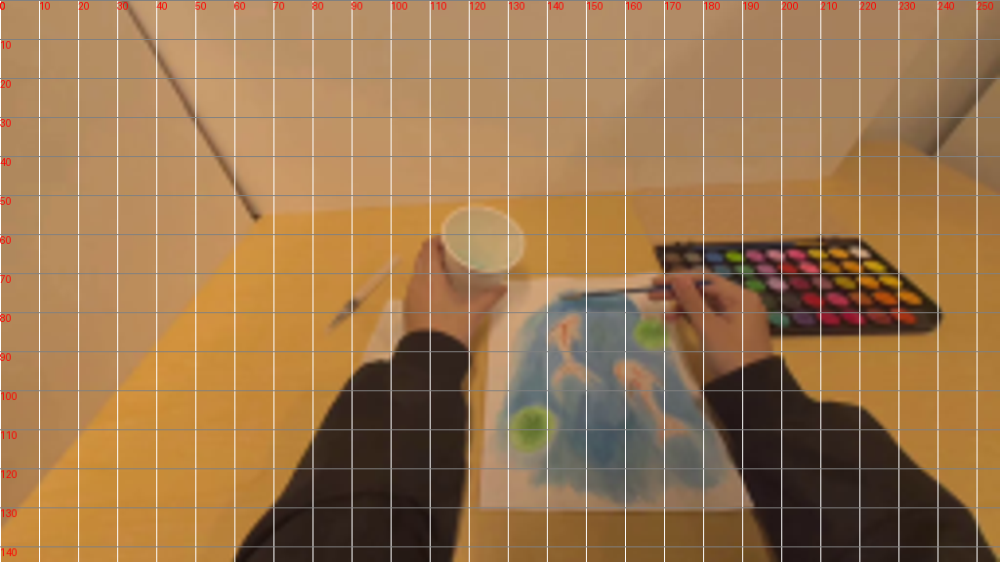
视觉工具实际返回图片 3
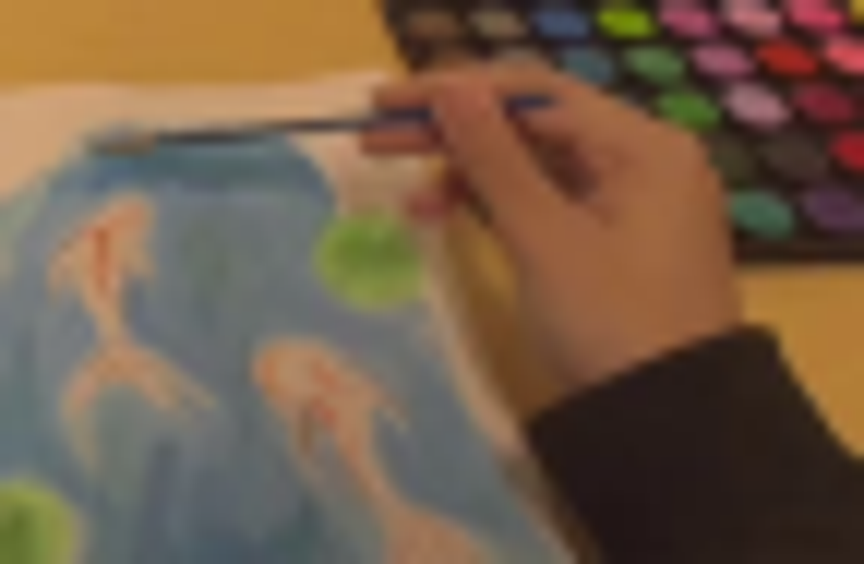
视觉工具实际返回图片 4
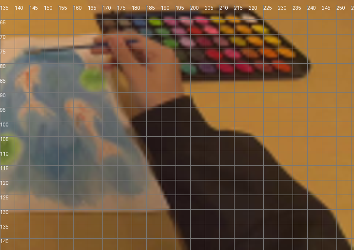
视觉工具实际返回图片 5
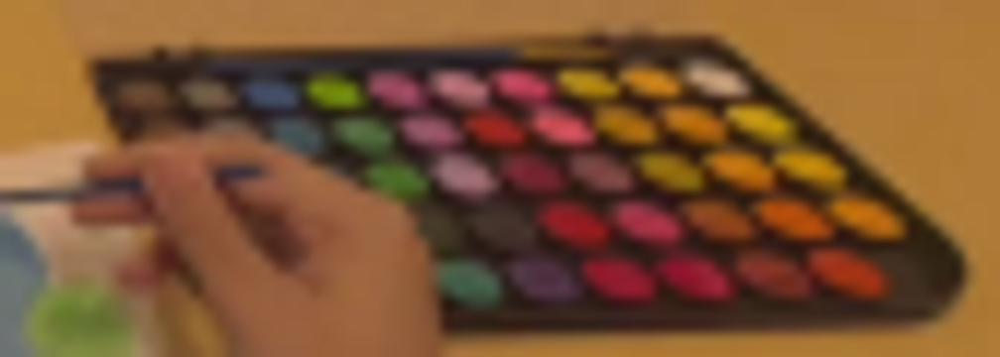
视觉工具实际返回图片 6
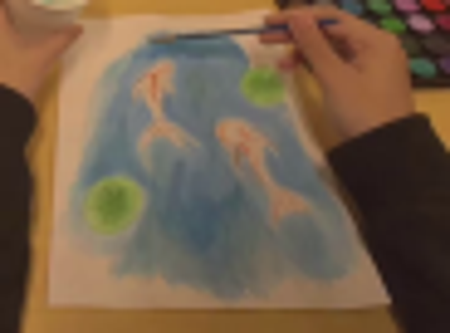
视觉工具实际返回图片 7

视觉工具实际返回图片 8
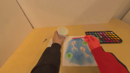
视觉工具实际返回图片 9
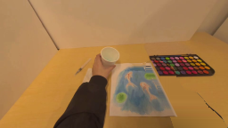
视觉工具实际返回图片 10
视觉工具实际返回图片 11
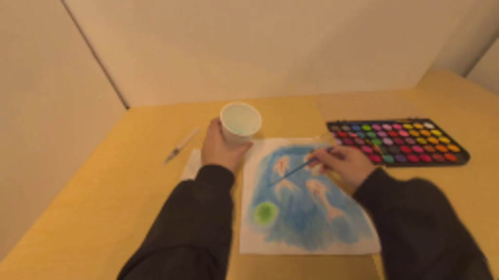
视觉工具实际返回图片 12

视觉工具实际返回图片 13

视觉工具实际返回图片 14
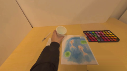
视觉工具实际返回图片 15
视觉工具实际返回图片 16
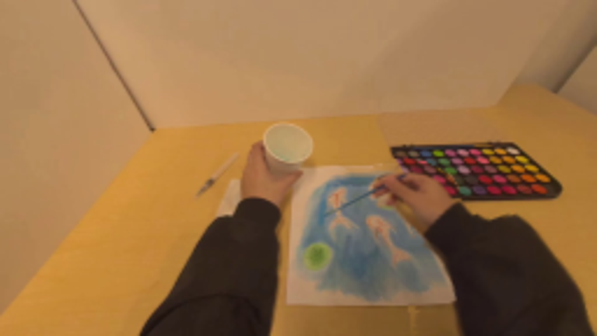
保存候选 4 份；完成命令 20 次；可验证图片返回 16 张。原始 API 响应与完整日志保留在本地。